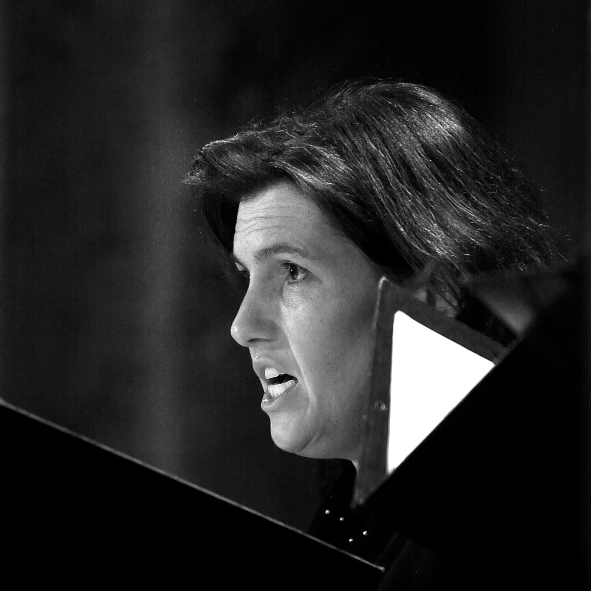

Kaarsen en wierook
De kracht van OrSeCante ligt in de thematische verwevenheid, vaak in een religieuze context. Daardoor krijgt de muziek een meerwaarde en kan het publiek zich inleven in de sfeervolle omkadering. Een eerste hoogtepunt zijn de Lamentationes van de Victoria, in 1993. Het concert verloopt zoals in het Officium, waarin na elke lectio kaarsen worden gedoofd. De Victoria mag nog eens ontroeren in 1999, met het Requiem, in de Leuvense begijnhofkerk, die alleen door kleine kaarsjes is verlicht. Soms brengen we verschillende componisten rond een thema bijeen. Zo wordt in 2002 het Requiem ‘Missa Pro Defunctis’ van de Portugese polyfonist Duarte Lobo afgewisseld met polyfonie uit de renaissance en de 20e eeuw. Muziek van Barber, De Morales en Gombert vinden een gepast einde in ‘Song for Athene’ van John Taverner.

Dirigent-Bezieler
De thematische aanpak is de blauwdruk van dirigent Arnout Malfliet, die overneemt in 1990. Ook Arnouts fantasierijke beeldspraak is legendarisch. Elk koorlid heeft wel ergens een van zijn uitspraken als voetnoot in zijn partituur staan: “Jullie Gloria moet klinken als dikke Rubensiaanse engeltjes”, of “zorg dat je de trein niet mist, anders hang je er achteraan te bengelen als in de Comedy Capers”.
Eigen Klankkleur
OrSeCante vindt gaandeweg zijn eigen klankkleur, met een voorliefde voor polyfonie en vroege barokmuziek. In 1996 en in 1998 worden we voor concerten van Claudio Monteverdi begeleid door het blazersensemble Ritornello. De volledige uitvoering van zijn Mariavespers in 1998 is een groot succes. Ritornello begeleidt ons nog eens in 2003, voor het project “l’Homme armé”. Ook Heinrich Schütz zit in het DNA van OrSeCante, zeker in de beginjaren. Van hem voeren we in 2001 het muzikale testament uit, ‘Opus Ultimum’. De dubbelkorige psalmen waren lange tijd als verloren beschouwd. Oude en minder bekende parel3tjes van onder het stof halen, ook dat doet OrSeCante graag.

Vernieuwde Zijsprongen
Af en toe zoekt het koor nieuwe muzikale paden op en vindt het inspiratie bij 19e en 20e eeuwse componisten. Een eerste experiment in 2000, de ‘Kanon Pokajanen’ van de Estse componist Arvo Pärt, ademt de sfeer uit van de orthodoxe eredienst. In 2005 zingen we onder leiding van interimdirigent Dieter Staelens werken van de IJslander Nordal, aangevuld met werken van de Noor Grieg.
Bhag en Bach
OrSeCante neemt in de loop der jaren ook grote klassiekers in zijn oeuvre op. De geweldige samenwerking met het Bhag-ensemble uit Halle onder leiding van Dirk Ottoy kan niet genoeg in de verf worden gezet. In 2006 voeren we samen met Bhag en het vocaal ensemble Seicento uit De Pinte de Messiah van G.F. Handel uit. Met Bhag wagen we ons ook aan de Johannespassie van J.S. Bach, in het Duits, in 2008. Twee jaar later zingt OrSeCante de passie in het “Leives”, in een volle Sint-Pieterskerk in Leuven.

Huisorganisten en Huissolisten
A capella-stukken mogen dan al de mooiste intieme klanken opleveren, koorzang krijgt een speciale kleur door een subtiele orgelbegeleiding. Voor de meeste concerten kan OrSeCante een beroep doen op organist Ivo Bigaré. Zijn rustige maar bevlogen toetsenwerk is een fundament voor onze tonaliteit. Met organist Wouter Dekoninck pakken we samen met het Bhag-ensemble nog twee vurige werken van Händel aan: ‘Dixit Dominus’ in 2012 en ‘Israel in Egypt’ in 2016. We hebben de eer gehad om met enkele grote solisten het podium te delen: Jan Caals, Dirk Snellings, Marnix De Cat, Jan Van Elsacker, Kristel De Mulder, Adriaan De Koster, Lieven Termont, Bart Uvyn en Elke Janssens. Nooit hebben we de meerwaarde van dat samen musiceren meer beseft als na het eindakkoord van het ontroerende ‘Prose des Morts’ van Marc-Antoine Charpentier in 2007. Zangers, solisten en de muzikanten van Bhag bleven minutenlang voor elkaar applaudisseren. Het geheel was meer dan de som van de delen …
Buiten de paden
OrSeCante heeft geen grote reistraditie. Enkele keren zoeken we de buurlanden op: Brielle nabij Rotterdam en Rijsel in Noord-Frankrijk. In 2019 mochten we de Evensong gaan uitvoeren in de kathedraal van Canterbury (UK), op 24 en 25 juli. Ook koorwedstrijden zijn niet echt ons ding, maar het provinciale koortornooi in Oud-Heverlee is tweemaal een goede graadmeter van onze technische prestaties. Tot slot vermelden we de zeer speciale ervaring in 2016: in het Flagey-gebouw in Brussel samen met andere amateurkoren en het Vlaams Radiokoor voor het ontroerende ‘Sleep’, gedirigeerd door de grote componist “himself” Eric Whitacre.
